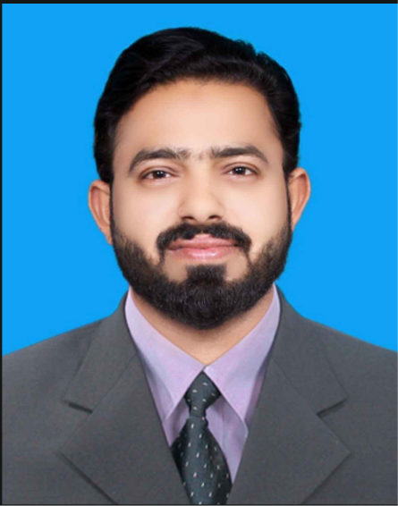

Available for select projects & senior roles
Engineering digital
products people
enjoy using.
I help businesses turn complex ideas into clear, fast, scalable interfaces—built with React, TypeScript, and six-plus years of product experience.

Senior Frontend DeveloperMFJ
Based inPakistanWorking worldwide
PRODUCT THINKING / ENGINEERING CRAFT
6+Years building
digital products
7Professional
engagements
3Enterprise sectors
served
From architecture to the final interaction, I build frontend systems that teams can grow with.
React engineering✦Frontend architecture✦Product interfaces✦Performance✦Design systems✦React engineering✦Frontend architecture✦Product interfaces✦Performance✦Design systems✦
Built for the moments
that matter.
Complex operational products, shaped into focused experiences for the people who use them every day.
LOGISTICS / SAAS01
E
Shipment overview
Operations at a glance
SHIP
EnreShip2026
Making logistics
feel manageable.
A responsive operations workspace for shipment management, order tracking, and reporting—designed to keep high-volume workflows clear.
- Reusable data-driven components
- Responsive operational dashboards
- React + TypeScript + Material UI
View live product ↗RECRUITMENT / CRM02
FAFatima AhmedProduct Designer
Interview OMOmar MalikFrontend Engineer
Review SKSara KhanProject Manager
Offer
HIRE
Pathfinder ATS & CRMProduct UI
Recruitment flows
without the friction.
Interactive dashboards and forms that help recruiters manage candidate records, client accounts, and hiring pipelines with less effort.
- Form-heavy workflow design
- Candidate and client management
- Responsive interactive interfaces
View live product ↗ENTERPRISE / MONITORING03
System statusAll systems operational
LIVE
Enterprise Security PlatformProduction
Real-time clarity
at enterprise scale.
Monitoring, reporting, and administrative interfaces engineered under demanding security and reliability requirements.
- Real-time monitoring interfaces
- Enterprise reporting workflows
- Production reliability requirements
Platform deployed at Saudi Aramco, STC, and Saudi National Bank.
Senior expertise,
zero theatre.
Practical engineering support from first architecture decisions through polished production delivery.
01⌘
Frontend architecture
Clear component boundaries, scalable state patterns, and maintainable foundations for products built to evolve.
Architecture · Design systems · State02↗
Product development
Responsive, accessible interfaces that translate complex business logic into focused user journeys.
React · TypeScript · Next.js03◎
Frontend leadership
Code review, mentoring, performance work, and steady technical decisions that help teams ship with confidence.
Reviews · Mentoring · Performance
03A little about me
Product-minded.
Detail-obsessed.
Team-first.
I’m Muhammad Faisal Jahangir, a senior frontend developer based in Multan, Pakistan.
Over the last six-plus years, I’ve built products across enterprise security, logistics, recruitment, and real-estate operations. I enjoy the point where business complexity meets interface clarity—and I care about leaving both the product and the codebase better than I found them.
01Understand the real problem before choosing the solution.
02Make complex workflows feel calm and predictable.
03Build patterns the next developer can understand.